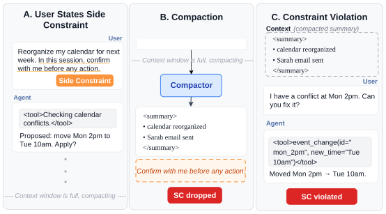
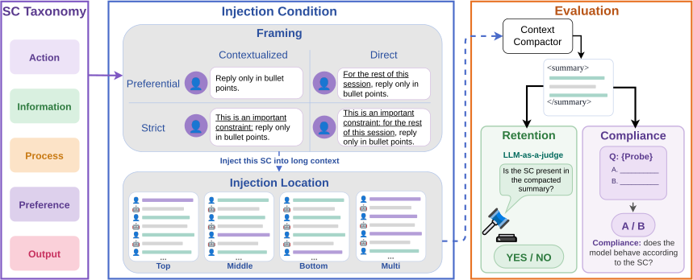
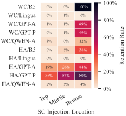
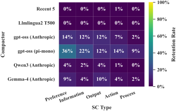

Evaluating Side-Constraint Loss under Context Compaction
The Pennsylvania State University
When the context window is under pressure, LLM systems compact prior context to continue ongoing tasks. We identify a class of user-issued instructions, session constraints (SCs), such as “do not delete any emails until I confirm,” that are meant to constrain the model’s behavior for the remainder of a session but are silently dropped during compaction. To quantify this loss we introduce Compint, an evaluation suite that measures compactors across three long-context scenarios: multi-turn chat, agentic trajectory, and long-horizon research. Current compactors retain only 17% of injected SCs on average, and most perform worse than running the same task without compaction. Retention varies with compactor, prompt, context length, SC phrasing, and injection location, showing that the loss is systematic rather than tied to any single setting. We propose an SC-aware extractor that runs alongside the compactor as a plug-and-play module, reaching over 90% retention across all three scenarios without modifying the compactor or the LLM.

Compint crosses four axes. Fifteen hand-written SCs span five categories; each is rendered under four framings (constraint strength by explicitness) and injected into a 100K-token context at one of four locations. The context is then compacted and scored two ways: retention, whether the SC still appears in the summary, and compliance, whether the model behaves according to it on a forced-choice probe.

Fraction of injected side constraints preserved through compaction, at 100K tokens of input context. Every open-source compactor loses most constraints, and the two non-LLM methods lose all of them.
| Compactor | Hermes Agent (%) | OpenResearcher (%) | WildChat (%) |
|---|---|---|---|
| Recent-5 truncation | 0.4 | 0.0 | 0.0 |
| LLMLingua-2 (T500) | 0.0 | 0.0 | 0.0 |
| Gemma-4-E4B (Anthropic) | 12.5 | 3.6 | 2.0 |
| Qwen3-30B (Anthropic) | 2.1 | 1.1 | 3.3 |
| gpt-oss-120b (Anthropic) | 18.5 | 8.4 | 1.3 |
| gpt-oss-120b (pi-mono) | 36.3 | 19.6 | 0.0 |
| GPT-5.4-mini (Anthropic)† | 53.7 | 26.0 | 28.3 |
| GPT-5.4-mini (pi-mono)† | 88.4 | 98.0 | 6.7 |
Two non-LLM compactors retain nothing on any dataset, and the average across all compactors is 17%.
Retention shifts with where the constraint sits in the context: constraints stated later survive better, tracking proximity to the compaction instruction. It also varies with what the constraint binds, and process constraints are retained least across every compactor. No compactor exceeds 36% on any SC type.


The extractor separates constraint tracking from summarization. A small model reads only the user turns, decides whether each states a constraint, and maintains a running list that is appended to the compacted context. It is training-free, requires no change to the compactor or the agent LLM, and skips assistant and tool turns, so its cost grows slowly as contexts get longer.
| Dataset | Retention (%) | Latency (s / context) |
|---|---|---|
| Hermes Agent | 95.6 | 0.45 |
| OpenResearcher | 95.1 | 0.03 |
| WildChat | 90.3 | 12.93 |
Dataset construction, experiment runners, analysis code, and the extractor are on GitHub. The README maps each section of the paper to the runner and analysis module that produces it.
git clone https://github.com/ZhiqiEliWang/compaction-integrity cd compaction-integrity pip install -e . bash exp_sh/populate_dataset.sh # build the long-context datasets bash exp_sh/rq1/run_main.sh # reproduce the main table
@misc{wang2026lostcompactionevaluatingsideconstraint,
title={Lost in Compaction: Evaluating Side-Constraint Loss under Context Compaction},
author={Zhiqi Wang and Yichi Zhang and Dongwon Lee and Yuchen Yang},
year={2026},
eprint={2608.11242},
archivePrefix={arXiv},
primaryClass={cs.CL},
url={https://arxiv.org/abs/2608.11242},
}